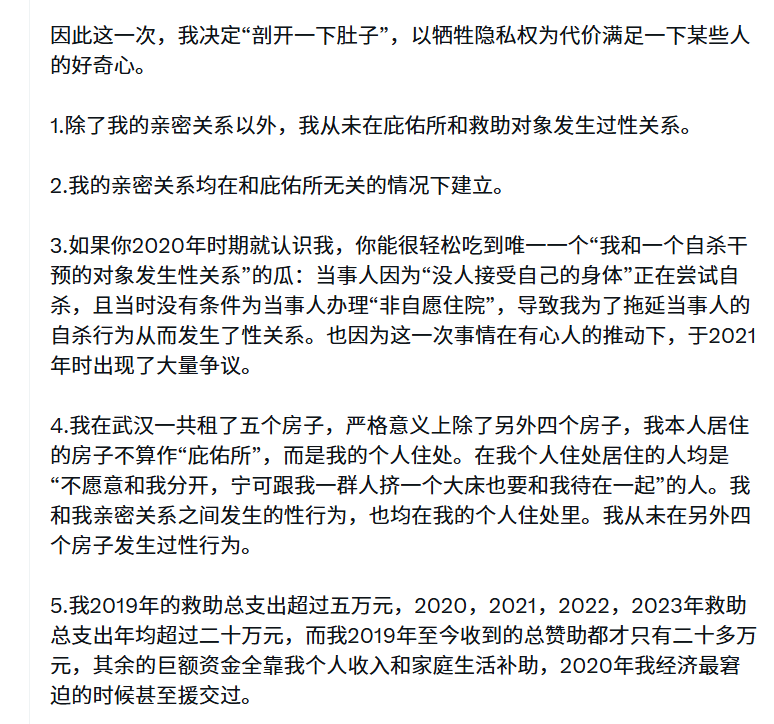

@HANLIANYI331 @LwrDHYyuxR22499 @Si1entW4ve 第一，在 @misakixyg 跟我把程梓語的那部分事兒承認確實完全做過之後，依然承認你和程梓語發生過關係。
第二，你完全可以提起民事訴訟索要程梓語賠償，但你沒這麼幹，是因為有什麼導致不能這麼幹嗎？作為在別人搬家的時候把傢俱直接搬空的人我不認為你不會反擊。
你如何解釋這兩點？別給我玩文字遊戲。

第二，你完全可以提起民事訴訟索要程梓語賠償，但你沒這麼幹，是因為有什麼導致不能這麼幹嗎？作為在別人搬家的時候把傢俱直接搬空的人我不認為你不會反擊。
你如何解釋這兩點？別給我玩文字遊戲。

@LwrDHYyuxR22499 @Si1entW4ve 你这话问题很大，我原推文说的是：
我只和我的亲密关系在庇护所（甚至严格来说都不一定算是庇护所，只是收容了其他房子塞不下的人，属于我自己的常住地）发生过性关系，以及我唯一一次和受助者发生性关系是在2020年。 https://t.co/luqTimspmk
我只和我的亲密关系在庇护所（甚至严格来说都不一定算是庇护所，只是收容了其他房子塞不下的人，属于我自己的常住地）发生过性关系，以及我唯一一次和受助者发生性关系是在2020年。 https://t.co/luqTimspmk